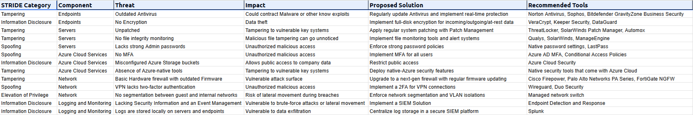
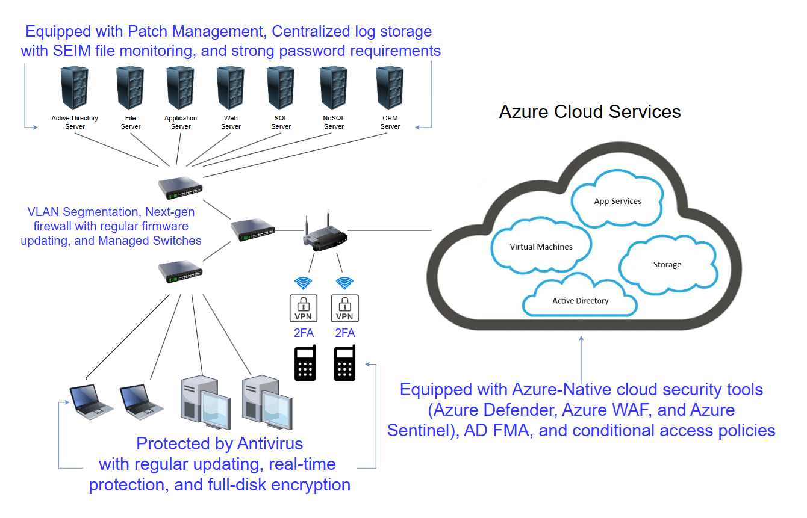
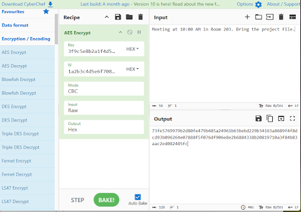
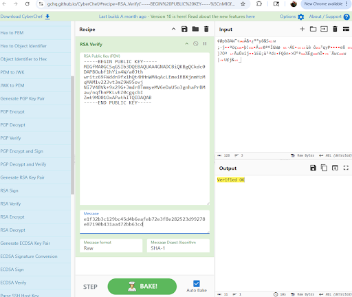
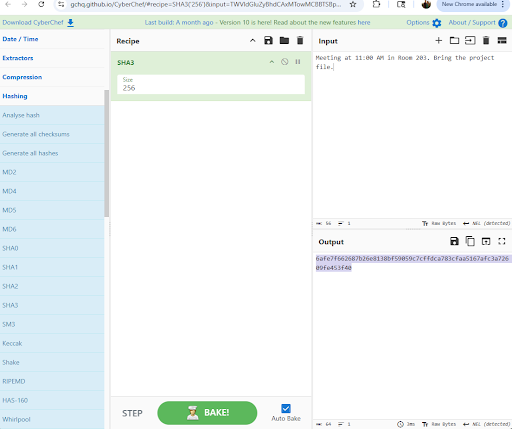

A security assessment combining structured STRIDE threat modeling, infrastructure analysis, security architecture improvements, and applied cryptography to identify weaknesses and design stronger protections for systems, networks, identities, and sensitive information.
This project evaluated a simulated technology environment to identify security weaknesses, analyze potential threats, and design appropriate safeguards. The assessment combined threat modeling with security architecture and cryptographic controls, demonstrating how different security disciplines can work together to reduce organizational risk.
The assessment examined weaknesses across endpoints, servers, cloud resources, network infrastructure, authentication, permissions, and security monitoring. Findings were evaluated in the context of how an attacker could exploit the environment and what controls could reduce that exposure.
The environment included systems requiring stronger patch management, encryption, authentication, and endpoint protection to reduce the likelihood and impact of compromise.
Authentication weaknesses, including the absence of multi-factor authentication in portions of the environment, increased exposure to unauthorized access.
Outdated perimeter security and insufficient network segmentation created opportunities for unauthorized access and lateral movement between systems.
Cloud-storage exposure and decentralized security logging demonstrated the need for stronger cloud configuration and centralized visibility across the environment.
STRIDE provided a structured framework for considering how systems and information could be attacked. The model helped connect technical weaknesses to specific categories of security threats and appropriate mitigation strategies.
Evaluated scenarios in which an attacker could impersonate a legitimate user or system.
Considered unauthorized modification of systems, configurations, messages, or stored information.
Examined the importance of logging and accountability when users or systems perform security-relevant actions.
Identified conditions that could expose sensitive information to unauthorized individuals.
Considered threats capable of disrupting the availability of systems, applications, or network resources.
Evaluated weaknesses that could allow a user or attacker to obtain permissions beyond those they were authorized to possess.
The assessment documented 13 security findings and used structured threat analysis to connect vulnerabilities with potential attack scenarios and recommended safeguards.

Original STRIDE threat-modeling assessment documenting 13 findings across endpoints, servers, Azure cloud services, network infrastructure, and logging and monitoring. Each finding connects a threat category and component to its potential impact, proposed mitigation, and recommended security tools.
Findings from the assessment were translated into a redesigned security architecture emphasizing layered controls, stronger authentication, network isolation, improved endpoint protection, and centralized monitoring.
VLAN-based segmentation was incorporated to separate systems and reduce unnecessary communication between security zones.
Multi-factor authentication and stronger access controls were recommended to reduce exposure from compromised credentials.
Updated firewall capabilities, patch management, endpoint protection, and full-disk encryption strengthened multiple layers of the environment.
Centralized security logging and SIEM capabilities were recommended to improve visibility, investigation, and detection across systems.

Redesigned infrastructure architecture created for the assessment, incorporating network segmentation, stronger perimeter controls, centralized monitoring, endpoint protection, multi-factor authentication, encryption, and Azure security controls.
The project also demonstrated how encryption, hashing, and digital signatures can work together to protect confidentiality, integrity, and authenticity when sensitive information is exchanged.
AES-256 using CBC mode was used to encrypt message content, demonstrating symmetric encryption for protecting the confidentiality of data.
RSA asymmetric cryptography was used to protect the AES key, demonstrating how public-key cryptography can support secure exchange of symmetric encryption keys.
SHA3-256 hashing was used to create a message digest that could be compared to determine whether the original information had changed.
RSA signing and verification demonstrated how digital signatures can provide message authenticity and help verify that information has not been modified.
The message was intentionally modified and hashed again. The resulting digest differed from the original, demonstrating how hashing can reveal changes to protected information.
Selected artifacts from the hands-on cryptography exercise demonstrate encryption, signature verification, and integrity testing using cryptographic operations.

Message content was encrypted using AES-256 in CBC mode, demonstrating symmetric encryption of sensitive information.

RSA verification produced a successful “Verified OK” result, demonstrating validation of a digital signature.

The original message was intentionally modified from 10:00 AM to 11:00 AM and hashed again, demonstrating how a changed digest can reveal modification of the underlying data.
Encryption and access controls help prevent unauthorized disclosure of sensitive data.
Cryptographic hashing and digital signatures provide mechanisms for identifying whether information has been altered.
Stronger authentication and asymmetric cryptography help establish trust between users, systems, and communications.
Network, endpoint, identity, monitoring, and cryptographic controls combine to reduce reliance on any single safeguard.
Applying STRIDE to systematically evaluate potential security threats and connect weaknesses to realistic attack scenarios.
Translating assessment findings into layered technical safeguards and infrastructure improvements.
Using symmetric encryption, asymmetric cryptography, hashing, and digital signatures to protect information.
Connecting technical weaknesses, threat scenarios, security controls, and fundamental security objectives.
This case study is based on a simulated environment and cybersecurity training exercises. It contains no confidential client, employer, or proprietary information.